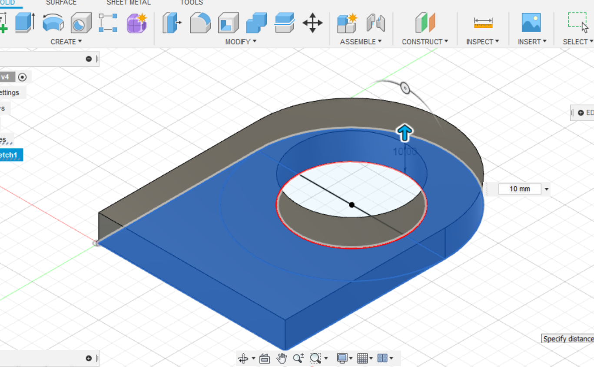
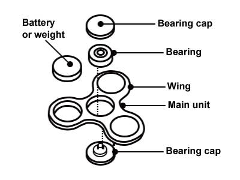
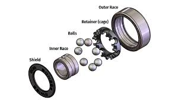
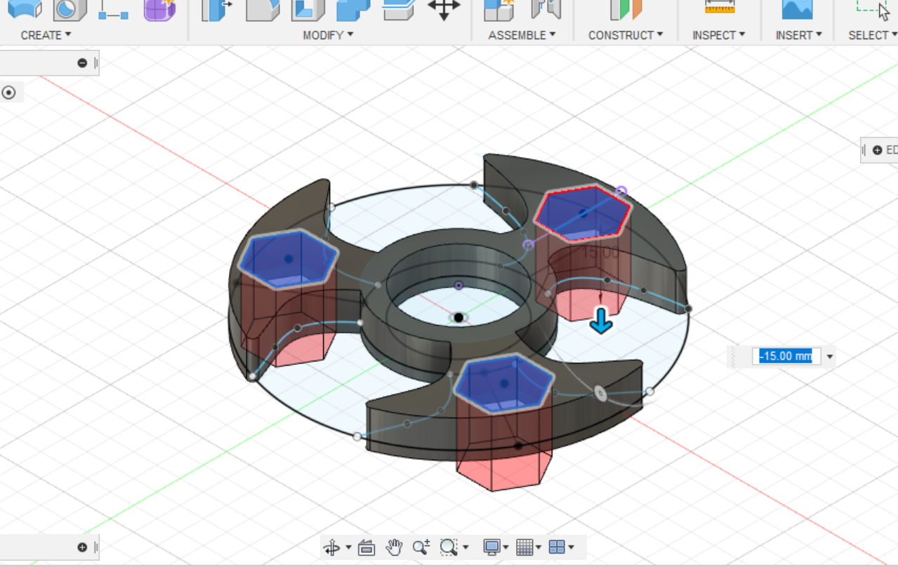

Fusion360 is a Computer-Aided Design software which free to use. It is the way to go for designers, engineers, students and hobbyists.
The versatility of Fusion360 allows you to design anything you want. The cloud-based system of Fusion360 is also a plus for people who
want to work on their projects anytime and anywhere.
1. Extrusion
Extrusion creates a 3D solid from an object that encloses an area, or a 3D surface from an object with open ends. To
extrude, click on the Finish Sketch and mouse over to the Create tab and click the Extrudetool.
Another way is using the shortcut key 'E' on the keyboard.
2. Revolution
Revolve creates a feature or new solid body by rotating one or more sketched profiles around an axis. To revolve an object create
a 2D sketch that is enclosed. Mouse over to the Create tab and click the Revolve tool. Select the face you wish to revolve and
the axis of the revolution.
3. Fillet
Fillet creates smooth rounded edges to objects. To create a fillet, mouse over to the Modify tab and click on
the Fillet tool. Another way is using the shortcut key 'F' on the keyboard.
4. Chamfer
Chamfer creates a sloped transition between two surfaces or adjacent faces on a 3D solid. To create a Chamfer,
mouse over to the Modify tab and click on the Chamfer tool.
5. Offset
Offset creates concentric circles, parallel lines, and parallel curves on the 2D sketch. To offset, mouse over to
the Modify tab and click on the Offset tool. Another way is using the shortcut key 'O' on the keyboard.
6. Loft
Loft is a great tool for creating a transition between two or more sketch profiles or faces.
This tool can be used to create chutes or sheet metal transitions. To create a loft, draw a sketch on any plane then
press Finish Sketch. Go to the Contruct tab and click on Offset Plane. After specifying the distance
of the offset plane according to your liking, create another sketch on the Offset Plane and press Finish Sketch.
Now you have 2 planes with a sketch on each plane. Repeat these steps for a many planes as you wish. Next, mouse over to the
Create tab and click on the Loft icon. Lastly, select your sketches and connect your sketches with your mouse to produce
the lofted feature.
7. Shell
Shell removes the material inside a body. To shell and object, first create a 3D object. In this scenario, I have reused
the lofted object from the above point. After doing so, mouse over to the Modify tab and click on the Shell
icon. Then, select from which face you would like to shell the object.
Bonus: How did I get the cross-section view of the object? After I shelled, I mouse over to the Inspect tab
and I clicked on the Section Analysis icon. From there, I select the cutting plane of the object.
Example 1
To start, I went to sketch mode, sketched at 70 by 60mm rectangle and coincident it to the origin. Then I sketched a
diameter 40 circle and coincident it to the centre of a length of the rectangle. On the same length I then sketched a 2nd
circle from the midpoint of the same length of the rectangle to the width of the rectangle such that the diameter of the
2nd circle equals to the length of the rectangle.

Next, I extruded the sketch to a height of 10mm. As shown in the photo above.
Next, I made another rectangle on the top side of the object with a dimension of 50 by 15mm. Using the vertical contraint
tool, I aligned the rectangle symmetrically with the object.
Lastly, I did negative extrusion of the sketch hence creating a rectangular hole through the object.
To begin, I first created a sketch of the nametag. Note that the nametag should not exceed 30mm X 70mm,
otherwise it will not fit into your pocket. The key ring hole must have a diameter of at least 2.5 mm
with neck width of at least 3.5 mm for strength, otherwise it will break when the metal keyring is inserted.
The overall thickness of the nametag must also not exceed 4mm. You can start of by:
Creating a rectangle of about 50 by 15mm.
Adding a trapezium/curve on one end of the rectangle. I ensured that trapezium symmetrically aligned with the rectangle
In this case I approximated the height of my trapezium to be about 6.6mm.
At the shortest end of the trapeium I added 2 arcs with a specification of 3.75 radius and 3.5 diameter respectvely.
I offseted the lines of my (trapezium + rectangle) shaped drawing inwards to about 2mm.
Lasly, for my drawing, I inserted my name using the Text tool found under the Create tab. I ensured that there
was enough spacing between my name and the inner walls of the nametag.
After finishing the sketch, it is now time to extrude. Take note that the overall thickness should not exceed 4mm. For me,
extruded till its maximum allowed extrusion. Specify the height of your extrusions base on your linking.
Because nametags, are usually exposed or hung loosely, I decided to fillet the sides of the nametag. Above is an example of how I
did the fillet for the ring hole.
A fidget spinner is a toy consisting of a ball bearing in the center of a multi-lobed
flat structure made from metal or plastic which is designed to spin along its axis with little effort.
Parts of a fidget spinner


Below are the designs of my fidget spinners. The center hole for all my fidget spinners have been dimensioned to 8 by 22 by 7 mm to fit
the ABEC 608 Bearing for the rotation mechanism. Fidget Spinners 1 and 2 are original designs from me while
Fidget Spinner 3 is inspired by Ninja Star Fidget Spinner. Hexagonal holes were added to Fidget Spinner
1 and 2 to allow the fitting of Hex Nut M8 to act as counter-weights.
Fidget Spinner 1
To begin, sketch the fidget spinner according to its specifications. To do this:
Sketch out the main unit of the fidget spinner with 3 circles. The inner circle will be of diameter 22mm to
make space for the ABEC 608 Bearing while my middle circle and outer circle is of diameter 30mm and 70mm
respectively. Ensure that the center of the
circles are coincident to the origin.
From the middle circle, I sketched the wings using the Spline tool. The spline connects the middle circle to
outer circle. I then drew a straight line¹ from the middle to circle to outer circle. I used the Mirror tool to
mirror the spline thus achieving the shape of 1 wing. Also, do ensure that the ends of the splines are coincident to the
circles.
I then used the Circular Pattern tool located under the under the Create tab to create the other 2 wings
revolving around the center of the object.
For this step, I extruded the sketch to a height of 8mm.
Next, I drew a hexagon an aligned it with the straight line¹ using the vertical constraint. How did I create the hexagon.
Under the Create tab I clicked on the Polygon tool. I wanted the dimension from the center of the polygon to
edge to be 6.5mm in order to fit the Hex Nut M8.
Hence, I chose the Inscribe option for my polygon in order to get the dimension of 6.5mm as mentioned. Next, I use the Circular Pattern
tool again to create 2 more 6.5mm corresponding hexagons.

Lastly, I extruded the hexagons downwards to create a hexagonal hole. Also, I filleted of the sharp edges of the fidget spinner as
the final touch so that it will be safe for people to use.
The process of making the chess knight can be divided into 2 parts. The first part is creating the base. To create the base,
firstly, I made a closed sketch of how I would like the base to look like from side view.
Then, using the Revolve tool, I revolve the sketch 360 degrees producing the base.
The next step I sketched out a photo of the knight. This can be done using a canvas by tracing the image of the knight.
Then, I extruded the sketch symmetrically to 12mm thickness followed by combining the 2 bodies.
I filleted the edges so that it will be smoother.
For the last sketch, I sketched out a small eye using the Spline tool.
Finally I extruded the sketch inwards to produce a tunnel.
MacBook Stand Pro 11 Max Ultra
Using Gimp
I used the GIMP software to crop out the background of a bird sitting on a branch and I added some text to it.